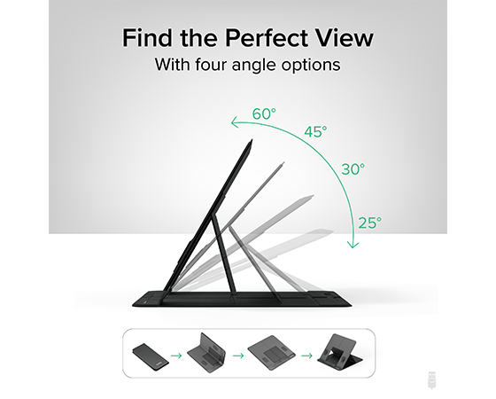
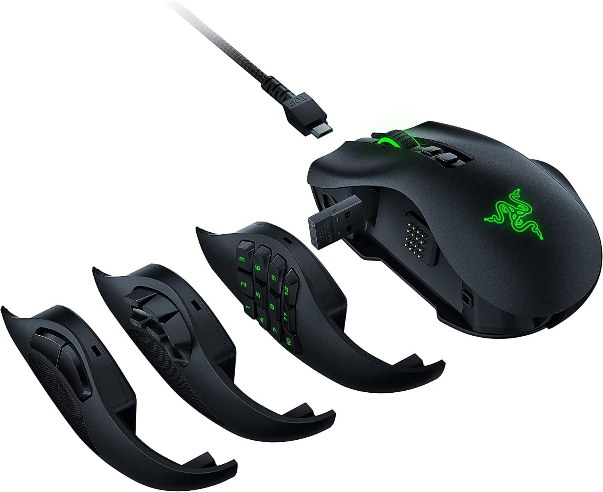
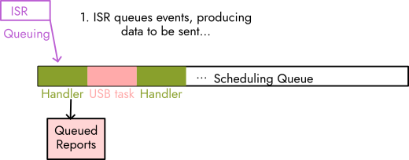
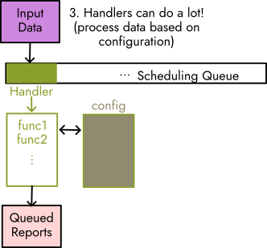
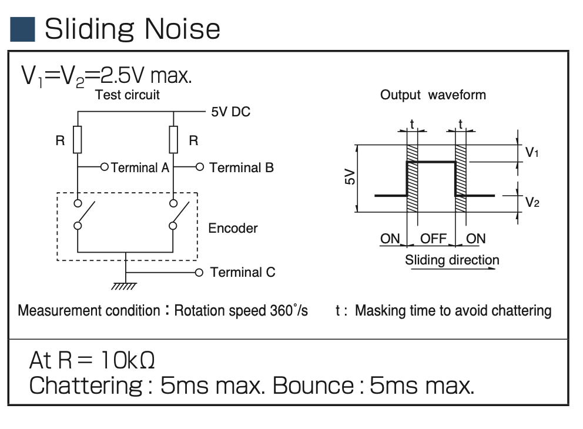
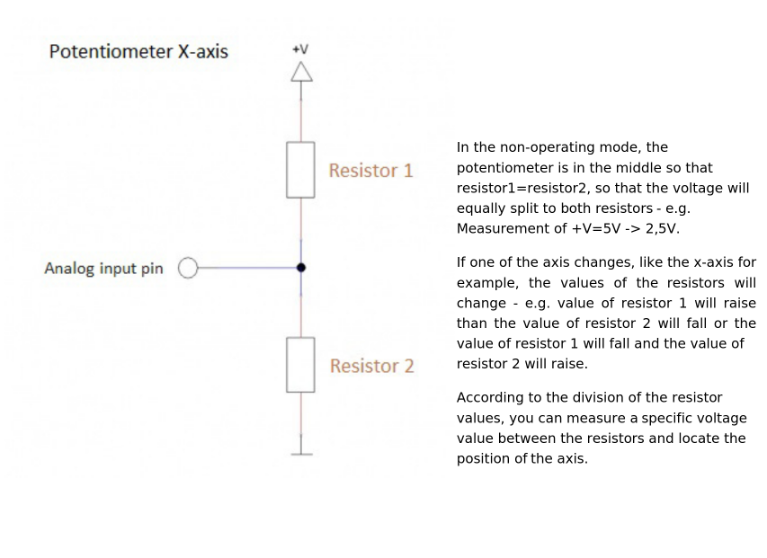

High Level Design
No AI was used throughout this entire project.High Level Design of Hardware
The foundational inspiration for this project was the physical design of a computer mouse, particularly to make the mouse ergonomic and fit the needs of different users that may require something other than your standard computer lab mouse. Considering all the different components a mouse could have, any consumer can go buy a specific mouse to get side buttons and a separate mouse to get a tilted design or a trackball. Thus, it paved the road to the idea of adjustable and interchangeable parts as why not have the different options available for a single mouse rather than needing multiple.
Starting with the hardware and physical design, we focused on creating a mouse for right handed people as the time wouldn't allow for ensuring the mouse could be used by either hand. Some of the goals included:
- Adjustable tilt that ranges from flat to vertical.
- Can switch between being a optical mouse and a trackball mouse.
- Other swappable parts such as buttons, rotary encoders, and anything that may make sense to put on the side of the mouse.
- Wired and wireless with a rechargeable battery.
These aspects were inspired by various mice on the market along with DIY projects representing what users truly want from their mouse.
It was from some commercial mice such as the Logitech MX Ergo S that has a slight adjustable tilt due to a magentic plate underneath and uses a trackball, which
users may be interested in a mouse like this for its ergonomic design, allowing those who may have or risk conditions in their hand, wrist, and arm such as carpal
tunnel or arthritis as they create comfort through a more natural hand and wrist positions, reducing strain. Also the trackball can help with precision, being an appealing
option to digital artists, 3D modelers, video editers, etc. This inspired the ideas of attempting to have the option of using a trackball--
or rather a joystick for this project--and a shell that would allow for adjustable tilt, which unlike the Logitech mouse and similar to the Contour Unimouse and Mad Catz
R.A.T. DWS Wireless Gaming Mouse, we strived for a more kickstand-like method of changing the angle with an extra piece moving in and out seen in some tablet holders or stands.

Tablet stand to give the reference point of how we chose to achieve the adjustable tilt.
Another commercial mouse that ended up a major source of the design of the mouse was the Razer Naga Wireless Gaming Mouse. Unlike some other gaming mice that come with side macro buttons already attached and unable to be removed, the Razer Naga introduced the idea of interchangeable sides to allow for a different number of buttons as some people prefer only two while others prefer having twelve depending on what game or other hobby they may be doing. Thus, it sparked the idea of including interchangeable parts in the same fashion but with different options than what Razer offers. We initially planned for a blank side piece if no extra components were desired, a piece with two tactile buttons, and a piece with a joystick acting as our trackball.
Razer Naga mouse that gave us inspiration for interchangeable parts.
Now that we had an idea for the shell design and available components we wanted, we had to turn to DIY mice to get an idea of what circuit components we may need that could interface with the RP2040. There are some custom mice created by users such as wareya who created a custom gaming mouse and BenMakesEverything who made a custom mouse using multiple macro buttons and a horizontal rotary encoder on the side rather than a scroll wheel. Wareya's mouse helped find the rotary encoder we ended up using to get the regular scroll wheel, and BenMakesEverything provided information on his github and youtube channel on how to build the mouse and leading us to using the PMW3389 motion sensor in our final design. We did end up having to figure out how to wire everything ourselves as both creators ended up making custom PCB boards that did not fit the design that we had in mind. As we did not have the skill set to create or time to order our own PCB boards, we used a bread board prototype PCB while the motion sensor fortunately came with its own breakout board.

Sketch of the base of the mouse.

Sketch of the top of the mouse.
High Level Design of Software
Input hardware is configured using drivers, which provide an initialisation and start function for each input hardware device connected. These configure the relevant peripherals on the Pico to interface with hardware, and set up an interrupt to be triggered when the device has data to be read and processed.
Upon firing, each interrupt looks up a handler function in a hardware configuration data structure, perhaps does some basic data processing, and adds its data plus the handler function to a scheduling queue.
 handlers come from IRQs, and buffer their changes to state
Handlers on the scheduling queue are called in order. The handler function(s) further process / manipulate the data, writing into a 'buffer' mouse event, queueing a keyboard event, or changing the mouse's internal state.
 tinyusb is called intermittently
tinyusb is called intermittently
Intermittently, the TinyUSB library's core device task is used to send pending events created by the handlers to the USB host. A callback chained to the task is used to clean up --- for example, to indicate a key release for every keyboard event sent.
 handlers can provide advanced behaviour, too
Handler(s) can directly represent simple mouse events, but can also call into a structured event handling system which provides further options for input manipulation and configurable behaviour. Behaviour is defined in a configuration file which specifies which functions data ought to be passed through, and additional data for the functions to read from (for example, a key mapping, or user-defined quantities).
Hardware
List of Materials
| Item | Quantity |
|---|---|
| RaspberryPi Pico or PicoW | 1 |
| PMW3389 Motion Sensor | 1 |
| PMW3389 Lens | 1 |
| PMW3389 Breakout Board | 1 |
| Perma-Prototype Half-sized Breadboard PCB | 1 |
| Joystick | 1 |
| Buttons | 2-7 |
| Mouse Scroll Wheel Rotary Encoder | 1 |
| Female Header Pins 1x4 or 1x5 | 4 |
| PLA Filament | <1 spool |
| 10K Resistors | 2 |
Circuit

Circuit Diagram
Mouse Shell
With the design that we had in mind, it was required for us to 3D model the shell. Initially we almost went without making a shell, but it organized the design better, incorporated the concepts of interchangeable parts and adjustable tilt, and ultimately made the user experience a bit better than if we had no shell at all to move around. So the final shell we got printed included:
- A base to hold the PMW3389 sensor.
- A lid to the base that had notches to allow for adjustable tilt angles.
- The main mouse body that held all the other components that was meant to have a hinge to help with angles.
The base was designed based on the measurements of the PMW3389 sensor in its data sheet as it went over the dimensions needed in the base of a typical mouse to first fit the lens in and then place the sensor and sensor's breakout board on top.

The base piece of the mouse

The base piece being printed

The base piece of the mouse printed and with the sensor inserted.
Next the lid of the base was designed as any lid would be; however, we cut out a hole so that the wires connected to the sensor could go through and up to the PCB and connect with the circuit. We also created hinges so the body piece hypothetically could connect to the lid and be able to go up and down for the sake of allowing different angles.

The top view of the lid of the base.

The bottom view of the lid of the base.
The main body also first started with hinges to connect with the base lid, a hole to let wires through, and an indent on the bottom to allow for a kickstand piece. Beyond that, we followed almost the same shape as the base until the right side where hypothetically the interchangeable parts would connect if we didn't connect everything all at once (which is what we ended up doing). To adjust for this idea, the right side was cut to create a parabola-like shape, which then two holes were cut to put headers in if interchangeable parts did make the final design. That would also lead to the piece that would fill in this area along with a holder for the joystick.

The full mouse with the main body attached.

The printed pieces for the lid and the body.

The 3D printed pieces put together.
PMW3389 Sensor
Used often in gaming mice as even noted in its data sheet, the PMW3389 sensor is what tracks the movement of the mouse if we were keeping it as an optical mouse. How it works is that in the sensor, there is an LED light (illumination source as noted in the block diagram below) that together with the lens, the Image Aquisition System (IAS) is able to capture microscopic surface images. These images are then used by the Digital Signal Processor (DSP) to determine the direction and distance of motion, which then leads to the DSP calculating the ∆x and ∆y relative displacement values. It is then read by the RP2040 from the chip serial port where the data can be translated to the needed signal (USB in our case).

Block Diagram of PMW3389. Image from the datasheet.
Vertical Rotary Encoder
Encoder Circuit. Image from the datasheet. The encoder essentially contains two switches which open in close in different timing, pulling their connected pins from 5V to ground. The resistors are used to limit current in the circuit, while also biasing the terminals towards being 'inactive high'. Then, when a switch is closed, the voltage measured by the terminal will fall, which can be used to trigger some action. We opted for a simple two-resistor design, which seemed to work well, although adding filtering capacitors to reduce the measurement noise could be helpful.
Joystick
Joystick internals The joystick essentially contains two variable resistors, each wired according to the diagram above (from the datasheet). The resistivity of 'resistor 1' and 'resistor 2' increase / decrease when the joystick is moved, which changes the voltage measured at the input pin. This can be read by an ADC. While the datasheet suggests using 5V as supply voltage, the Pico does not have 5V output. We instead used a 3.3V rail, which seemed to work okay.
Buttons
We connected up to seven buttons to perform right click, left click, the click from the scroll wheel, and various custom functions that can be found in the software section. The pin is pulled high while the button is connected between the pin and ground. When the button is pushed, a connection will be made between the pin and ground so then the function programmed to the specific mouse can be performed.
Software
The software package is called Peromyscus, after the genus of North/Central American rodents.
Initial Goals
basics
- usb mouse functionality with buttons, debouncing, and movement
- works with multiple types of sensors: joystick, scroll wheel
- some basic compile-time configuration:
- rebinding buttons to different functions
- double-click actions?
- or long press - use FSM
- adjusting some constants in input receiving
extensions (subitems ranked from easier to harder)
- boot interface subclassing
- macro chains
- input manipulations
- on-the-fly switchable scroll speed
- acceleration and debouncing curves / functions
- user defined methods of above
- different modes of configurability
- USB configuration protocol?
- config file (written using USB)
- embedded scripting engine (builds on above)
- wireless
- PS/2
- different operation modes (power save, performance, etc.)
- code optimisation
usb
To handle the USB device interface, we opted to use the TinyUSB library bundled with the SDK.
This library offers high-level functions like tud_hid_n_mouse_report, which abstract away the details of sending a mouse event. However, using these functions beyond the provided examples is poorly documented and opaque.
The TinyUSB website does not provide a listing / descriptions of the available functions, an annoyance. It also claimed that the tud_task (TinyUSB Device Task) needed to be called "every so often" in the code's main event loop, but does not specify how often or its implications.
When trying to create a minimum viable example of an asynchronous event trigger, we ended up spending a substantial amount of time debugging / understanding TinyUSB.
We found that tud_task handles both transmission callbacks and bus configuration / setup, and needs to be run not just to handle events generated by the device, but also those generated by the host. These tasks cannot, to our knowledge, be moved to a separate handler. This presents a power-saving issue because the function must be regularly called to handle bus events, rather than on demand. We did not investigate whether it was possible to interrupt-trigger tud_task.
As a result, rather than calling tud_task 'on-demand' when new events occurred, we simply set tud_task to repeat every 1ms. We found this to be the most reliable approach to interfacing with the library asynchronously, even though it unfortunately means more computation than necessary happens.
While sending USB packets is done using a polled task, adding new packets to be sent is done on-demand, triggered by interrupts.
TinyUSB offers the option to define callback functions, which are run after certain operations. Some callbacks from the TinyUSB example are left as is. These include callbacks for device mounting / unmounting and changes in its suspend state, which change the flash frequency of the Pico's onboard LED. Minimal examples for the GET_REPORT and SET_REPORT control requests, which turn on the LED when a caps lock is signalled but do little else, are also included.
We also created a callback for report completion, modified from the examples, which takes an appropriate action to clean up a previous message. For example, to prevent repeated sends of a keypress, this callback sends a corresponding key release; while resetting the state of the pending mouse report, to be changed by new inputs.
The library configuration (USB descriptors and TinyUSB configuration header) replicate the TinyUSB example in the Pico SDK. Further modification of the library or the functions used could be performed, but we were worried about breaking the fragile library, and thus made minimal changes. The config files set up keyboard, mouse, and 'consumer control' (for volume, media, etc.) device classes, which are in turn formalised into descriptors. Descriptors form a tree under a top-level descriptor, and are requested by and reported to the host, and are used to determine at a high level what a device is.

an image from BeyondLogic showing the USB descriptor tree. see below for the relevant link
USB is a packetised protocol --- data is sent in packets. For the HID class' reports, packets encode a usage, which specifies how the host should interpret the data sent. For example, the volume adjustment usage specifies a data format for requesting the host to adjust volume.
sources:
drivers:
see the drivers page for more.
scheduling:
see the scheduling page for more.
event architecture
Drivers have the option of queueing 'basic' handlers which directly map their outputs to HID events, or can choose to schedule a handler which goes through the event subsystem.
The behaviour of the event handling substystem is intentionally separated from hardware configuration.
The event handling subsystem allows the user to configure up to three layers. The restriction on layer count is to reduce memory requirements, but could most likely be increased.
The configurable behaviour includes:
- a symbol table containing default layer, scroll, x, and y modifiers
- overrides for the scroll, x, and y modifiers for each of three layers.
Here, we introduce the notion of an 'event chain', a 4-element long array of function pointers. These functions all accept data in the form of a driver event, and either mutate it or change some state based on it. Since these are called by the parent handler in sequence, the length restriction is meant to reduce the time which a handler blocks the scheduler.
Buttons can specify a standard mouse button, keyboard combination, or HID consumer control usage per layer; in addition to an event chain. They can also specify an 8-bit value to put into the symbol table.
For the sensor, encoder, and joystick, the user is able to configure a chain per layer.
The restricted nature of the event chains, in particular surrounding buttons, is to reduce the amount of things that could go wrong. In the future, it is most likely more appropriate to provide a small variable store which chains can read from / write to.
configuration types
events/types.h provides the data structure definitions for configuration. the event_symbol_table is a basic store of the layer number, and scroll / mouse modifiers. the st_data type is meant to provide a one-load / store means of overwriting the whole symbol table, but we never ended up using this to enable per-layer defaults.
button_opt_t encodes the configuration for a given button. This includes an ID of whether it contains data for the symbol table, or a keyboard/mouse/consumer control binding. Then, a union is used to represent the necessary information for each of these options in 16 bits. For keyboard events, it is an 8-bit modifier (control, alt, etc.) plus an eight-bit keycode (A, B, etc.). For mouse buttons, it is an 8-bit mapping of the possible mouse buttons, using the same eight-bit mapping as TinyUSB does (see the source code). For a symbol, it is an 8-bit identifier for which symbol to change, plus an 8-bit value.
All configuration is centralised in a bind_opts structure, which provides an overview of the number of layers configured for each input, as well as the full mapping of button bindings. This data structure is referenced when the chain handlers are run to determine the correct behaviour.
provided handlers
ebind.c defines basic handlers which directly receive data from a driver and transform it to a mouse report. There is also a btn_end function designed to handle a button with a more advanced configuration.
Two boolean flags, kb_queued and consumer_queued, indicate whether a keyboard or consumer control event has been added to the end of the queue. These are used in the tud_hid_report_complete_cb to indicate a button release.
Mouse movements, scrolling, and button presses are accumulated in a queued_report, which is sent intermittently. After appending their data, the mouse_{l,r,m}, mouse_deltas, and mouse_wheel handlers queue mouse_end to run in 1 ms if it has not been queued already. This provides some measure of event consolidation, in the case where multiple inputs come in within the same millisecond.
hw.c provides some handlers to interface with hardware components. These are currently basic, and turn interrupts for the joystick / sensor on and off; but could be extended to include, for example, adjustment of sensor DPI.
elib.c provides a series of transformation and core functions which can be composed with others to create more exciting behaviour. These include:
transmute_{scroll,mousex,mousey}: turn a button event into a scroll or mouse movement event. This could enable precise control over mouse movement with buttons.scale: depending on the type of input event, apply a multiplicative scalar from the symbol table to all dimensions of the data.shrink: likescale, but dividing instead of multiplying.flatten_{x,y}: reduce two-dimensional sensor or joystick data into a one-dimensional scroll amountflatten_abs_{x,y}: likeflatten_{x,y}, but use the overall magnitude squared rather than just one dimension, with sign determined by the x or y sign.invert: this one we forgot to implement, but should invert the direction of mouse movement / scroll, and change a button release to a press and vice versa.invert_{x,y}: invert a specific axis of sensor data.set_from_bmap: if the button configuration indicates that a press should set a symbol table value, apply that change.send_from_bmap: if the button configuration indicates that a press should trigger a USB event, use the button configuration andbtn_endto do so.{incr, decr}_layer: change the currently active layer.reset_layer: set layer to zero.llayer_if_hold: if a button is held, set the current layer to 3, otherwise return to the previous layer.
The hope is that the user can find interesting combinations of these events to get behaviour they may want --- for example, if they are a graphic designer, using the transmute capabilities and the ability to set different scalings to gain very precise control over mouse movement; or to use the joystick as a scrolling mechanism for better tactile feel / ergonomics.
chain handlers
Each primary type of device (button, joystick, and encoder) we enabled chains for has a "chain handler" defined in config_func.c These functions look up the appropriate chain from the configuration, and call the functions in order until a 'null' terminator function pointer or the maximum chain length is reached. They also clamp the layer in use --- if the layer specified in the symbol table exceeds the number of chains defined for that device, the highest layer with valid data is used.
The encoder and joystick chain handlers additionally supply a 'terminator' included by default, which sends the (potentially modified) data to the default mouse wheel or joystick handlers respectively. This is meant to permit more complicated data transforms that may not have space to explicitly send their output.
Running chains within a handler is an intentional design choice. Having a handler call them, rather than adding them to the scheduler, alleviates the risk of differing behaviour due to the order in which different chained functions are called.
Since the memory on which the chains operate is 'owned' by its parent handler, functions do not refer to each others' stack or do dynamic allocations. The included chainable functions also rigorously check their inputs for the correct format. While not necessarily forbidden, further memory allocation should be discouraged in future chainable functions.
c23 / code quality features:
For fun, and potentially to make porting easier, we tried to use some features defined in the C23 standard. These include:
- Explicit bit-widths for enums: this allowed for
structsizes to be better guaranteed, and for operations involving enums to be type-checked. constexpr, compile-time evaluation of some constants: while our use of this feature was quite limited, it presents a neater way of defining constants at compile-time, and enables them to be type-checked, unlike macros.nullptr: a small change. C23 defines an explicitnullptr, which hopefully makes null checks more readable and less susceptible to platform variation.auto: infrequently used to avoid writing out complicated type signatures. Overuse can decrease readibility, so we used it sparingly.static_assert: C23 offers compile-time assertion functionality. We used these to check the size of user-defined hardware configuration, to provide an early warning of potential sources of error.stdckdint: C23 formalises a standard checked arithmetic library, which indicates overflow for addition, subtraction, and multiplication. These functions were used to explicitly detect and handle corner cases --- for example, possible overflow in debouncing time calculations --- enhancing the correctness of the result.
No software is perfect, but we believe we used these features appropriately to enhance the correctness and readability of our code. An easy next step would be to explore function attributes, like [[nodiscard]], which requires use of return values. This could be used to make sure that error returns are properly responded to.
We also used the clangd language server with clang-tidy linter options configured. We kept linter warnings in mind during development to avoid or make explicit bugprone and platform-dependent behaviour, such as conversions between widths of integers.